在研究线性函数y ＝x 的函数图象时，如果在这个函数的基础上加上一个数字以后，y ＝x 的这条直线会沿着y 轴上升，如果你留心观察就会发现，y ＝x 的这条45°斜线向上移动的同时，其实也是向左移动了，移动之前它与坐标轴的交点是（0，0），如果把它向上移动1个单位长，变成了y ＝x ＋1以后，它就会和坐标轴相交于两个点，此时它不但会经过y 轴上的（0，1）这个点，而且会经过x 轴的（－1，0）这个点．（如图13－9所示）
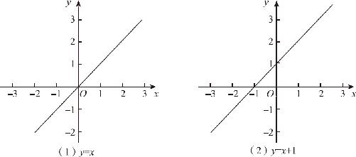
图13－9
既然一条直线同时向左和向上发生了位移，为什么只强调它向上运动呢？对于这样一根两端无限延长的直线而言，无论是向上移动还是向左移动，最终达到的效果都是相同的．如果只在y ＝x 的这条曲线上讨论这个问题，结论永远是说不清楚的，要想明白这个问题，还要看看一次函数的曲线．我们知道，一次函数的解析式是y ＝kx ＋b ，如果保持k 的值不变、更改b 的数值，我们就会发现，b 增减多少，原来的直线就顺着y 轴的方向上下移动多少，比如y ＝2x ＋1与y 轴的交点是（0，1），而y ＝2x ＋4与y 轴的交点就是（0，4）了，毕竟我们知道b 代表的是y 轴的截距，所以有这个情况也并不意外，但关键在于，当直线在y 轴移动的时候，它也会同时在x 轴上移动，y ＝2x ＋1与x 轴的交点是（－0.5，0），而y ＝2x ＋4与x 轴的交点就是（－2，0）了．（如图13－10所示）虽然直线在x 轴上移动的位置不多，但毕竟也发生了移动，那么函数图象在x 轴上的水平移动到底符合什么规律呢？
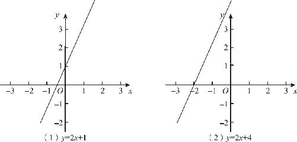
图13－10
在一次函数中，直线的位置之所以随着y 轴上下移动，并不是因为y 轴有什么特殊优势，而仅仅是因为计算顺序的不同．在函数y ＝kx ＋b 中，函数是先计算乘法后计算加法，如果我们把这个顺序颠倒过来，把函数变成y ＝k （x ＋b ），你就会发现，一次函数不再严格地随y 轴移动，而是变成随x 轴移动了．只不过，它的移动和原来y 轴的移动正好相反，在函数y ＝kx ＋b 中，b 越大，直线越往上移动，直线与y 轴的截距越大，但是在函数y ＝k （x ＋b ）中，b 的值越大，直线就越往左移动，直线与x 轴的交点就越小．这是为什么呢？
对比一下y ＝kx 与y ＝k （x ＋b ）就会明白了．新函数中的x ＋b ，相当于新的函数中的x ，这就意味着，如果原来的函数x ＝0时y ＝0，那么新函数就要在x ＋b ＝0的情况下，y 的值才等于0了．x ＋b ＝0，当然x 就等于－b 了．但是，为什么x 轴和y 轴移动的方向相反呢？按道理说不是应该是加变大，减变小吗？可是y ＝k （x ＋b ）的情况偏偏是，加一个数x 轴的交点变小，减一个数x 轴的交点反而变大．这又是为什么呢？
如果把y ＝kx ＋b 变个形就会得到：y －b ＝kx ．原来的加b 会变大，那是因为它在等式右侧，因为是在自变量x 的数值上加的，如果把b 通过移项挪到等式左边以后，它是减法．当然，函数表达式不是方程式，我们把常数项移动到等式左侧，只是便于理解．明白了这一点，就彻底明白了函数移动的基本规律．
对于任何一个函数而言，如果我们在函数计算前，先在x 后面增减一个数值，函数就会发生左右移动，增加一个数值向左移动，减去一个数值向右移动．而在函数计算完成后再增减一个数值，函数就会发生上下的移动，增加一个数值向上移动，减去一个数值向下移动．这是所有函数的普遍规律，一次函数是这样，二次函数同样是这样．我们可以实验一下y ＝（x ＋1）2 的函数图象，让x 先加1，加完以后再平方，这样得到的曲线，和y ＝x 2 相比，由于x 增加了一个数值1，所以整个曲线就会向左移动1个单位，原来抛物线沿y 轴对称，现在呢，挪到了x ＝－1的这根竖直的线上．（如图13－11所示）通过上述分析，我们终于讲明白了抛物线左右移动的根本原因．
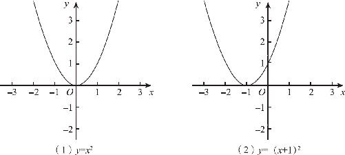
图13－11
也就是说，对于函数y ＝a （x ＋n ）2 ＋c 而言，a 决定了抛物线的开口方向和大小，n 决定了抛物线的左右位置，c 决定了抛物线的上下位置．但是，对于标准函数y ＝ax 2 ＋bx ＋c 而言，b 又代表了哪些含义呢？其实，只要采用配方法，强制把它配成y ＝a （x ＋n ）2 ＋c 的形式就可以了．
y ＝ax 2 ＋bx ＋c ，
提取系数a 后，得到
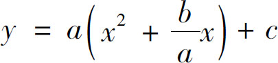
，利用一次项系数
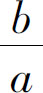
的一半配方，得到
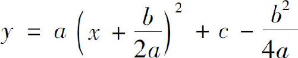
．最后我们得到了与y ＝a （x ＋n ）2 ＋c 完全一致的形式，只不过，在这个表达式中，n 变成了
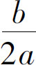
，常数项变成了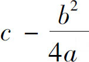
．于是我们知道，标准二次函数y ＝ax 2 ＋bx ＋c 的图象是这样一条抛物线：它的开口大小和方向由a 确定，它的对称轴是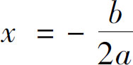
，同时，它的顶点的坐标为：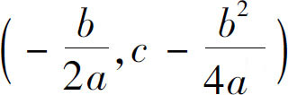
．在二次函数图象中，顶点的位置代表了函数的极值，当a ＞0时，抛物线开口向上，顶点在它的底部，此时函数拥有最小值；当a ＜0时，抛物线开口向下，顶点成了函数的最高点，因此函数拥有最大值；而且仅当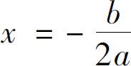
时，函数才能达到这个极值．通过函数图象得到的结果不止这些．根据a 、b 、c 的取值范围不同，二次函数的曲线与x 轴的交点分为三种情况：第一，当b 2 －4ac ＞0时，抛物线和x 轴存在两个交点；第二，当b 2 －4ac ＝0时，二次函数的极值等于0，它和x 轴就只有一个交点；第三，当b 2 －4ac ＜0时，抛物线和x 轴完全没有交点．（如图13－12所示）
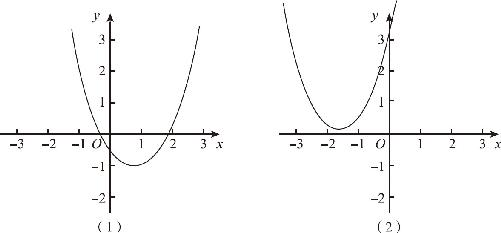
图13－12
x 轴上的所有点的纵坐标都等于0，如果二次函数y ＝ax 2 ＋bx ＋c 的图象与x 轴存在交点，就意味着ax 2 ＋bx ＋c ＝0这个方程式有解，而交点的个数就意味着解的个数．这样的高度契合使我们相信，几何图形和代数表达式只不过是同一个硬币的正、反两面，它们的融合绝不是偶然的，而是隐含着某种必然的规律．